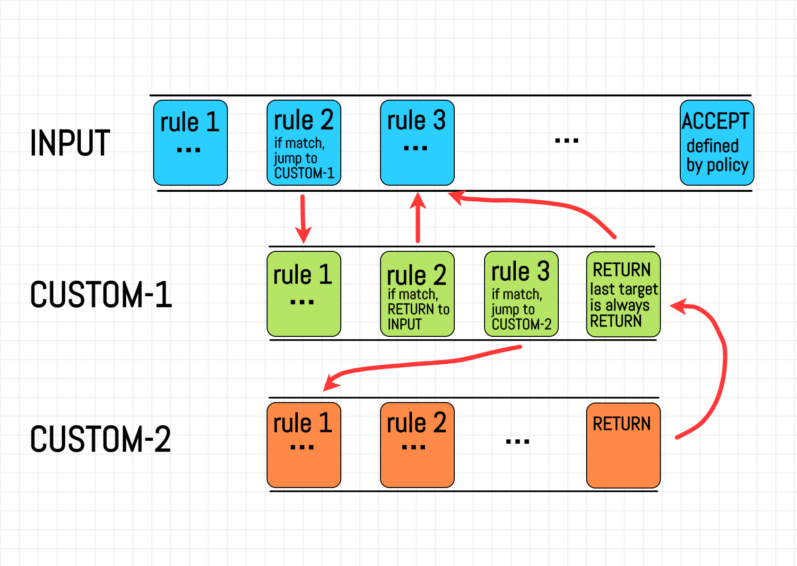

Advanced network configuration
with iptables
Giovanni Ciatto
References
- Illustrated introduction to Linux
iptables iptablesProcessing Flowchart (Updated Often)- Also the English Wikipedia page on Netfilter is quite informative
Network packets stepping through the Linux OS

-
Ingoing packets, coming from the Internet, are received by some local network interface (e.g.,
eth0)- these may be directed towards some local process willing to receive them
- … or towards another machine in the local network, via another local network interface (e.g.,
eth1)
-
Outgoing packets are sent by some local network interface (e.g.,
eth1) towards the Internet- due to either some local process sending them…
- … or some forwarding
What’s forwarding?

- While sending and receiving packets is more common for end-hosts (e.g. clients or servers)…
- … forwarding is more common infrastructural hosts (e.g. routers, load balancers, etc.)
The need for customization (pt. 1)

One may want to alter the default behaviour of the Linux OS in handling packets, e.g. to perform:
- firewalling, e.g. blocking packets from/to some IP addresses, or ports for security reasons
- translating network addresses, e.g. translating packets’ source/destination IP addresses or ports, e.g. for the sake of access control
- a.k.a. NATting, masquerading
- load balancing, e.g. distributing packets among multiple servers
- traffic shaping, e.g. prioritizing packets based on their content, or limiting their bandwidth
The need for customization (pt. 2)
This implies attaching some custom logic to specific points in the packet processing flow, e.g.:
- firewalling: may be achieved by dropping packets in the
INPUTphase - NATting: may be achieved by modifying packets in the
POSTROUTINGphase - load balancing: may be achieved by modifying packets in the
FORWARDphase - traffic shaping: may be achieved by marking packets in the
PREROUTINGorINPUTphase
Netfilter and iptables
Netfilter is the framework in the Linux kernel responsible for handling packets

- it allows for attaching custom logic to specific points in the packet processing flow
- you can do so, via high-level user-space tools, such as
iptables
Important aspects of Netfilter/iptables (pt. 1)
-
Chain: a list of rules to be applied to a packet to determine its fate, with decreasing priority
- they are usually named after the phase in the packet processing flow they are attached to
- e.g.
INPUT,FORWARD,OUTPUT,PREROUTING,POSTROUTING
- e.g.
- they are usually named after the phase in the packet processing flow they are attached to
-
Rule (of a chain): a decision on what to do with a packet matching a given criterion
-
Matching criteria (of a rule): are conditions a packet must satisfy to be matched by a rule
- they could be like
--source,--destination,--protocol,--sport,--dport, etc.
- they could be like
-
Target (of a rule): rules’ decisions are called “targets”
- they could be like
ACCEPT,DROP,LOG,RETURNto some prior chain, or jump to another chain
- they could be like
-
Policy (of a chain): the default action to be taken if no rule in the matches a packet
Important aspects of Netfilter/iptables (pt. 2)
Suggestion: think about
- chains as functions accepting packets as arguments, and returning a decision
- rules as if-then-else statements
- policies as the else part of an if-then-else statement
Important aspects of Netfilter/iptables (pt. 3)
- Tables: predefined groups of chains with a specific purpose
filter: contains chains for filtering packetsnat: contains chains for translating packets’ addresses/portsmangle: contains chains for modifying packetsraw: contains chains for low-level packet processingsecurity: contains chains for SELinux (SE $\equiv$ Security-Enhanced) rules
Default chains, per table
| Table | Chains |
|---|---|
| filter | INPUT, OUTPUT, FORWARD |
| nat | PREROUTING, POSTROUTING, OUTPUT |
| mangle | PREROUTING, INPUT, FORWARD, OUTPUT, POSTROUTING |
| raw | PREROUTING, OUTPUT |
| security | INPUT, OUTPUT, FORWARD |
INPUT: handles packets directed to the local systemOUTPUT: handles packets originating from the local systemFORWARD: handles packets routed through the systemPREROUTING: handles packets before they are routedPOSTROUTING: handles packets after they are routed
Default flow (pt. 1)
Overview

think about chains as hooks to which you can attach your custom logic
Default flow (pt. 2)
Input and output flows

Default flow (pt. 3)
Input and output flows

Admissible targets, per table (pt. 1)
| Table | Target |
|---|---|
| filter | ACCEPT*, DROP*, REJECT*, LOG, RETURN, ULOG |
| nat | DNAT, SNAT, MASQUERADE, REDIRECT, RETURN |
| mangle | MARK, TOS, DSCP, TTL, SECMARK, CONNMARK, RETURN |
| raw | NOTRACK, RETURN |
| security | SECMARK, RETURN |
* interrupts the processing of the current packet
Admissible targets, per table (pt. 2)
ACCEPT: accept the packetCONNMARK: enables a packet for connection trackingDNAT: changes the destination address of a packetDROP: drop the packetDSCP: sets the Differentiated Services Code Point (DSCP) header of the packetLOG: logs the packet details to the system logMARK: marks the packet for further processing (e.g., for QoS)MASQUERADE: changes the destination address/port of a packet being forwarded to match the outgoing network interface’s address, and changes back the destination address/port of the response packets
NOTRACK: disables connection tracking for a packetREDIRECT: redirects the packet to a different port on the same machineREJECT: drops the packet and sends an error response backRETURN: jump back to the calling chainSECMARK: marks packets for use with security modulesSNAT: changes the source address of a packetTOS: sets the Type of Service (TOS) header of the packetTTL: sets the Time to Live (TTL) header of the packetULOG: logs the packet details to userspace
About masquerading
This may be useful when the IP address of the client must be hidden from the server (or vice versa)
- In steps (1) and (2), the router performs masquerading on the outgoing packets of the client
- In steps (3) and (4), the router performs de-masquerading on the incoming packets from the server
Use cases
Experimental setup
(download VMs here)
- 3 Linux VM, running Lubuntu 20.04
- VMs are interconnected with each other into a private network (
192.168.1.x) - VMs are also connected to the Internet via the host, which is acting as the gateway (
10.0.2.x) - Port-forwarding is set up on the host to allow SSH access to the VMs
- e.g. on ports
3022,3023, and3024
- e.g. on ports
Use case: Firewalling at the service level (pt. 1)
- Goal: block all ingoing packets, except the ones directed towards a specific $port$
- Assumption: the $port$ corresponds to a service you want to expose to the Internet
- Motivation: reduce the attack surface of the system, by allowing only specific services
- Issue 1: ingoing packets for connections initiated from the local system should not be blocked
- Issue 2: the loop-back interface should not be blocked
Solution
- Set
REJECTas the default policy for theINPUTandFORWARDchains of thefiltertable - Set
ACCEPTas the policy for theOUTPUTchain of thefiltertable - Add a rule to the
INPUTchain of thefiltertable, matching packets directed towards the $port$, andACCEPTing them - Add a rule to the
INPUTchain of thefiltertable, matching packets for established connections andACCEPTing them - Add a rule to the
INPUTchain of thefiltertable, matching packets for the loop-back interface andACCEPTing them
Use case: Firewalling at the service level (pt. 2)
Code Example (for SSH on port 22)
# Flush existing rules (optional, to start fresh)
sudo iptables -t filter -F
# Set default policies to DROP for the INPUT and FORWARD chains, and ACCEPT for OUTPUT
sudo iptables -t filter -P INPUT DROP
sudo iptables -t filter -P FORWARD DROP
sudo iptables -t filter -P OUTPUT ACCEPT
# Allow packets for established and related connections
sudo iptables -t filter -A INPUT -m state --state ESTABLISHED,RELATED -j ACCEPT
# Allow incoming SSH traffic (port 22)
sudo iptables -t filter -A INPUT -p tcp --dport 22 -j ACCEPT
# Allow loopback traffic
sudo iptables -t filter -A INPUT -i lo -j ACCEPT
Important Remarks
- Do not run the commands one at a time: this would most likely make your system unusable (by blocking all incoming packets first)
- In any moment, use
sudo iptables -t filter -Lto inspect the current rules in tablefilter
Use case: Firewalling at the service level (pt. 3)
Defensive way to execute the code
-
Run
nano firewall.shand paste the following code:# Flush existing rules (optional, to start fresh) iptables -t filter -F # Allow loopback traffic iptables -t filter -A INPUT -i lo -j ACCEPT # Allow incoming SSH traffic (port 22) iptables -t filter -A INPUT -p tcp --dport 22 -j ACCEPT # Allow packets for established and related connections iptables -t filter -A INPUT -m state --state ESTABLISHED,RELATED -j ACCEPT # Set default policies to DROP for the INPUT and FORWARD chains, and ACCEPT for OUTPUT iptables -t filter -P INPUT DROP iptables -t filter -P FORWARD DROP iptables -t filter -P OUTPUT ACCEPT- notice that accept lines are before the drop lines (to avoid blocking yourself out)
-
Run
sudo sh firewall.shto apply the rules -
Ensure the rules are as expected by reading them with
sudo iptables -t filter -L
Use case: Firewalling at the service level (pt. 4)
Manual tests
- Try to SSH into the machine from another one, on the default port (22)
ssh user@machine- this should work
- Try to SSH into the machine from another one, on a different port (e.g., 2222), after reconfiguring the SSH server accordingly
sudo nano /etc/ssh/sshd_configand change thePortdirectivesudo cp /lib/systemd/system/ssh.socket /etc/systemd/system/sudo nano /etc/systemd/system/ssh.socketand change theListenStreamdirectivesudo systemctl daemon-reloadsudo systemctl restart ssh.socket ssh.service- (from another machine)
ssh -p 2222 user@machine
- this should not work (contacting the server on any port other than 22 should be blocked)
- Try to browse the Web from the machine
w3m http://www.google.it- this should work (incoming packets for established connections should be allowed)
Use case: Firewalling at the IP level (pt. 1)
- Goal: block all ingoing packets, except the ones coming from a specific IP address range
- Assumption: the IP address in the allowed range are trusted ones
- Motivation: access control based on IP addresses
- Issue 1: ingoing packets for connections initiated from the local system should not be blocked
- Issue 2: the loop-back interface should not be blocked
Solution
- Set
DROPas the default policy for theINPUTandFORWARDchains of thefiltertable - Set
ACCEPTas the policy for theOUTPUTchain of thefiltertable - Add a rule to the
INPUTchain of thefiltertable, matching packets coming from the trusted IP address range, andACCEPTing them - Add a rule to the
INPUTchain of thefiltertable, matching packets for established connections andACCEPTing them - Add a rule to the
INPUTchain of thefiltertable, matching packets for the loop-back interface andACCEPTing them
Use case: Firewalling at the IP level (pt. 2)
Code Example (for a specific IP range)
-
Run
nano firewall.shand paste the following code:# Flush existing rules (optional, to start fresh) iptables -t filter -F # Allow all traffic on the loopback interface (local system communication) iptables -t filter -A INPUT -i lo -j ACCEPT # Allow incoming packets from the trusted IP range (e.g., 10.0.2.x) iptables -t filter -A INPUT -s 10.0.2.0/24 -j ACCEPT # Allow incoming packets for established and related connections iptables -t filter -A INPUT -m state --state ESTABLISHED,RELATED -j ACCEPT # Set default policies to DROP for INPUT and FORWARD chains, and ACCEPT for OUTPUT iptables -t filter -P INPUT DROP iptables -t filter -P FORWARD DROP iptables -t filter -P OUTPUT ACCEPT -
Run
sudo sh firewall.shto apply the rules -
Ensure the rules are as expected by reading them with
sudo iptables -t filter -L
Use case: Firewalling at the IP level (pt. 3)
Manual tests
- Try to SSH into the machine from a machine in the trusted IP address range
- use
ip -o -f inet address showto verify the machine has an IP address in the range10.0.2.x ssh user@machine- this should work
- use
- Try to SSH into the machine from a machine not in the trusted IP address range
- use
ip -o -f inet address showto verify the machine has no IP address in the range10.0.2.x ssh user@machine- this should not work (contacting the server from any IP address other than
10.0.2.xshould be blocked)
- use
- Try to browse the Web from the machine
w3m http://www.google.it- this should work (incoming packets for established connections should be allowed)
Use case: Load balancing a service (pt. 1)
- Goal: let a service be replicated on multiple machines, and distribute incoming packets among them
- Assumption: there are 3 machines,
vm1acting as the load balancer, whilevm2andvm3act as backends- the service should be exposed on port
80onvm1, while it is running on port8080onvm2andvm3
- the service should be exposed on port
- Motivation: redundancy, scalability, and fault tolerance
- Remark: it would be better to use containers, and/or a dedicated load balancer, but this is a didactic example
Use case: Load balancing a service (pt. 2)
Solution
- Enable IP forwarding on the load balancer
vm1 - Add a new rule to the
PREROUTINGchain of thenattable:- matching incoming packets on port
80for protocol TCP - (in particular, half of the ones corresponding to new connections)
- redirecting (
DNAT) them to the backendvm2on port8080
- matching incoming packets on port
- Add another new rule to the
PREROUTINGchain of thenattable:- matching incoming packets on port
80for protocol TCP - (in particular, corresponding to new connections)
- redirecting (
DNAT) them to the backendvm3on port8080 - (implicitly handles the other half of the packets)
- matching incoming packets on port
- Add 2 more rules (one per backend) to the
POSTROUTINGchain of thenattable:- matching packets directed to the backends
vm2andvm3on port8080 - masquerading (
MASQUERADE) traffic directed to them - (implies demasquerading the response packets coming from them)
- matching packets directed to the backends
Use case: Load balancing a service (pt. 3)
Code Example (for a simple round-robin load balancer)
-
Run
nano loadbalancer.shand paste the following code:# Enable IP forwarding by writing non-zero value to /proc/sys/net/ipv4/ip_forward echo 1 | /proc/sys/net/ipv4/ip_forward # Flush existing NAT rules (optional, to start fresh) iptables -t nat -F # Whenever a new connection comes in on port 80, # redirect it to the backend 192.168.1.2:8080 if it's an even packet... iptables -t nat -A PREROUTING \ -p tcp --dport 80 \ -m conntrack --ctstate NEW \ -m statistic --mode nth --every 2 --packet 0 \ -j DNAT --to-destination 192.168.1.2:8080 # ... otherwise, redirect it to the backend 192.168.1.3:8080 iptables -t nat -A PREROUTING \ -p tcp --dport 80 \ -m conntrack --ctstate NEW \ -j DNAT --to-destination 192.168.1.3:8080 # Ensure that the backens' responses are correctly routed back to the client # as if they were coming from the load balancer iptables -t nat -A POSTROUTING -p tcp -d 192.168.1.2 --dport 8080 -j MASQUERADE iptables -t nat -A POSTROUTING -p tcp -d 192.168.1.3 --dport 8080 -j MASQUERADE -
Run
sudo sh loadbalancer.shto apply the rules -
Ensure the rules are as expected by reading them with
sudo iptables -t nat -L
Use case: Load balancing a service (pt. 5)
Manual tests
-
Start a Web service on port
8080onvm2andvm3- better for the service to return the hostname of the machine it is running on
- e.g. the hit-counter project
- better for the service to return the hostname of the machine it is running on
-
Contact the load balancer from another machine, and check the hostname returned
curl http://vm1- reload the page several times
- this should alternate between
vm2andvm3
-
Why you cannot use
localhostto test the load balancer?curl http://localhostonvm1would always fail, as the packets are not being routed- hence not passing through the
PREROUTINGchain
- hence not passing through the